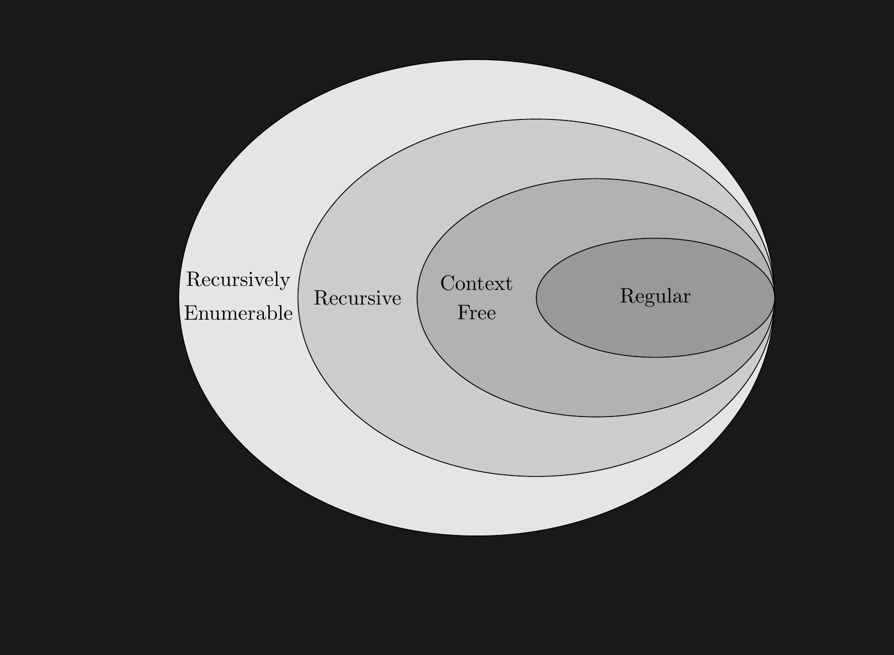

Turing Machines
Automata
Sketch
- Turing Machines
- Introduction
- Schematic
- Formal Definition
Turing Machines
Completed:
- Automata and Language Theory (12.5 hours)
- SLO 1: Define and differentiate between finite automata (DFA, NFA, GNFA) and reg- ular expressions, and demonstrate the equivalence between these models.
- SLO 2: Describe the capabilities and limitations of push-down automata (PDA) and context-free grammars (CFG), and apply the pumping lemma to prove that certain languages are not context-free.
Shift
- This lecture marks a shift
- We move from Automata theory to Computability theory
- We essentially introduced automata to understand the Turing Machine
- The Turing Machine models all computation.
Turing Machines “TM” (1936)
- Equivalent to:
- Alonzo Church’s Lambda Calculus (1930)
- I really like the Lambda Calculus
- No one else does 😂
- Kurt Gödel’s General Recursion (1933)
- Gödel claimed the TM was just better
- Emil Post’s model (1936)
- Basically a TM
- Alonzo Church’s Lambda Calculus (1930)
Schematic
How I imagine a TM

- \(q_1\) in head denotes the internal, finite state a la *FA/PDA
- The array denotes the tape, a la schematic model
- The
0denotes a special “blank” symbol.
Describing a TM
- Internal state: \(q_1\), basically the current *FA/PDA state
- Non-blank tape symbols
['1','1','B'] - The head position, say,
-1as it is before the symbols
Thinking about a TM
- Head can read and write
- Head is two-way
- Tape is infinite
- Infinitely many blanks(
0) follow input - Can accept/reject at any time
Example
\[ B = \{a^kb^kc^k|k\in\mathbb{N}\} \]
- Begin leftmost
- Scan right until
0while \(s \in a^ib^jc^k\) - Loop
- Return head to leftmost position.
- Cross off one each of
a,b,cor reject - Accept on all blank
Understanding Check
- What does cross off mean?
- How does it affect the alphabet?
Formal Definition
A Turing Machine
\[ M := (Q, \Sigma, \Gamma, \delta, q_0, q_{acc}, q_{rej}) \]
- \(\Sigma\): The input alphabet
- \(\Gamma\): The tape alphabet, we note \(\Sigma \subset \Gamma\)
- \(\delta: Q \times \Gamma \rightarrow Q \times \Gamma \times \{L, R\} \quad (L = \text{Left}, R = \text{Right})\)
- \(\delta(q, a) = (r, b, R)\)
A Turing Machine
\[ M := (Q, \Sigma, \Gamma, \delta, q_0, q_{acc}, q_{rej}) \]
- Term: Halt - a Turing Machine \(M\) “halts” by entering \(q_{acc}\) or \(q_{rej}\)
- Term: Loop - set complement of halt.
- Three possible outcomes for \(M\) on \(w\)
- Accept \(w\) by halting in \(q_{acc}\)
- Reject \(w\) by halting in \(q_{rej}\)
- Reject \(w\) by looping
Understanding Check
- Is this deterministic, or not?
- How to make it the other?
Recognize \(\oplus\) Decide
- Introduce term Turing-recognizable
- Let \(M\) by a TM.
- Let \(L(M) = \{w | M(w) \rightarrow q_{acc} \}\)
- Say “\(M\) recognizes \(L\)” if \(A = L(M)\)
- \(A\) is Turing-recognizable if \(\exists M : A = L(M)\)
Recognize \(\oplus\) Decide
- Say \(M\) is a decider if \(M\) always halts
- \(\forall w : M(w) \rightarrow \{ q_{acc}, q_{rej} \}\)
- Say \(M\) decides \(A\) if \(\exists M : A = L(M)\) and \(M\) is a decider.
- There exist things that are recognizable but not decidable.
Sets and Subsets
Terms
- See also:
- A recursively enumerable language is a way of referring to a Turing-recognizable language without using someone’s name (debatably poor form)
- A recursive language is the same, for Turing-decidable
- In practice, I use these terms (usually as “RE”) except when teaching a course on Turing Machines.
Sets and Subsets
